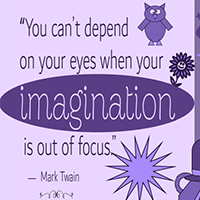
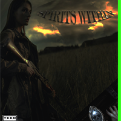
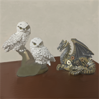

A little about me
Curious by nature, thoughtful by design.
Hi, I'm the artist behind arcanaKyouka, I'm an independent artist and writer, focused on creating art prints ranging from nature, characters, fantasy, and things I want to draw. I enjoy taking photos of animals and nature in my spare time. I'm also really into anime and japanese culture. These interests drive my ideas and creative process. I want my artwork to give people a sense of wonder and curiosity. I also want people to look at my work and get inspired; art gives us a way to create stories, explore ideas, and imagine new ideas. My name is Japanese and comes from "arcana" (mystery) and "kyouka" (mirror flower). This idea is also how I view art. Everyone sees art differently, and art reflects what people see back to them. Just like the optical illusion with a bunny and a duck, you might see one before the other and might not see the other at all. Art is subject to opinions and ideas, but remember the artist might have a different idea. So dive deeper and try to understand what your looking at.
Career direction
The work I’m looking for
As an independent artist and writer, I’m drawn to the way thoughtful visuals and words can spark curiosity and tell a story. I’d love to bring that perspective to web content, digital design, and front-end development through an entry-level role, internship, or collaborative project. I’m building my skills through small practice projects, learning how to make websites accessible and responsive, and asking classmates and mentors for feedback. I’m excited to keep learning while contributing creativity, clear communication, and dependable follow-through to a team.
How I work
Professional skills
Strengths I bring to a team and continue to practice.
My toolkit
Software and hardware
Tools I use or am learning for digital and creative work.
- Krita Digital painting and illustration
- Adobe Illustrator Vector graphics and illustration
- Adobe Photoshop Image editing and visual exploration
- Canva Graphic design and visual content creation
- Novelist Writing and organizing creative content
- Reedsy Studio Writing and organizing creative content
- Capcut Video editing and creative content production
- Visual Studio Code Code editing and project organization
Selected projects
Work samples

Color theory exploration
A playful illustration exploring color theory concepts.

Game cover design
A cover design for a game project.
Brush work and digital image overlay illustration
An illustration combining traditional brush work with digital image overlays.

Portrait commission for birthday gift
A custom portrait created as a birthday gift.

Digital painting
A digital painting created as practice.
Let’s connect
Get in touch
I’d be glad to hear about entry-level opportunities, internships, or collaborative projects.
Find me online
Social media and web
Store website in progress and use of stock images for right now.
My GitHub profile and repository.